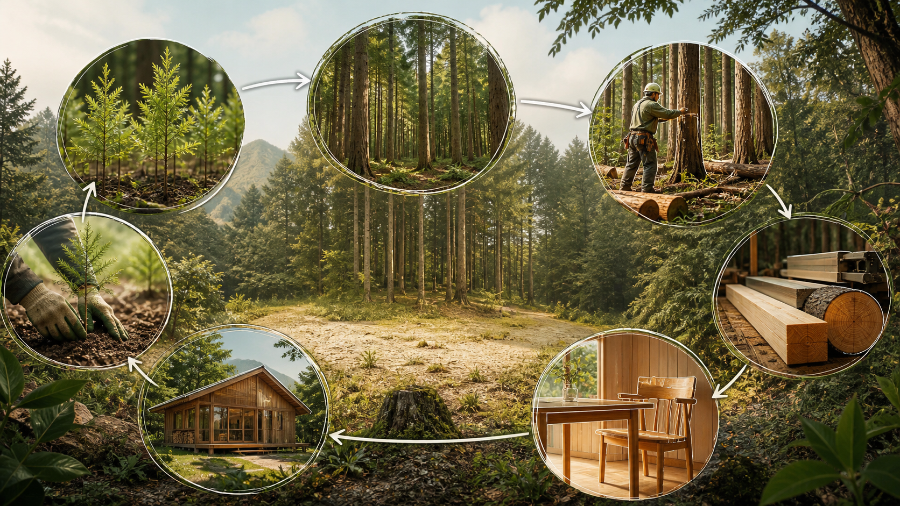

水の流れを整える
雨を地中へしみ込ませ、川へ流れる時間をゆるやかにします。
FOREST & DAILY LIFE
水、土、木、地域の仕事。森林は、私たちの毎日の暮らしと 静かにつながっています。まずは、そのつながりを知るところから。
FOREST, CLOSE TO US
森林は、木材を生み出す場所であると同時に、水や土、生きもの、地域の営みを支える場所です。こうした働きは、一つだけで成り立つものではありません。森を構成する木々、土、水、そこで暮らす生きもの、そして人の手入れが関わり合うことで、はじめて続いていきます。
森林について、もっと詳しく知る →01 / FOREST & LIFE
山に降った雨は、土にしみ込み、時間をかけて沢や川へと流れます。森は、その流れをゆるやかにし、土を守り、多様な生きもののすみかにもなります。
雨を地中へしみ込ませ、川へ流れる時間をゆるやかにします。
根が土を支え、表土が流れ出ることを抑える働きがあります。
木、草、土壌、生きものが関わり合う、豊かなすみかになります。
木材や景観、学びや休息の場など、日常に近い価値をつくります。
森林の働きは、場所の地形、土壌、植生、手入れの状態などによって異なります。豪雨などの被害を森林だけで防げるわけではありません。
02 / FOREST CYCLE
植えることだけでも、伐ることだけでも、森の循環は続きません。成長に合わせて見守り、必要に応じて手入れし、木を暮らしの中で長く使う。その連なりが、次の森を育てます。

若い木を育て、森の状態を見守る。
光や風が届くよう、必要な手入れを重ねる。
木を長く使い、次の世代の森へつなぐ。
03 / THE CHALLENGES
森林クレジットへの関心が高まる一方で、吸収量の過大評価や、長期的な管理の確実性に対する批判もあります。求められるのは、数字だけではなく、どの森林で、誰が、どのような手入れを続け、その結果をどう確かめるのかを説明できることです。
WHY EXPLANATION MATTERS
クレジット量は、プロジェクトがなかった場合の想定と、実際の吸収量との差から考えます。想定の置き方で結果が変わるからこそ、森林資源を継続的に計測し、施業の記録を残し、第三者が確認できる形で説明する必要があります。
その取り組みがなければ生まれなかった変化か。
所有や世代が変わっても、管理を長く続けられるか。
森林、施業、木材のデータで根拠を示せるか。
担い手、安全、生物多様性などにも良い変化があるか。
背景と数値は、農林中金総合研究所「森林クレジットから見える日本林業の課題」（2023年3月）で引用・整理された統計等を参照しています。制度や方法論は更新されるため、具体的な事業では最新要件を個別に確認します。
CHALLENGE 01 / OWNERSHIP
日本の森林は、小さな区画に分かれて所有されている地域が多くあります。相続が重なると、所有者や連絡先が分からない、本人も山の場所を特定できない、隣接地との境界を確認できない、といった問題が起こります。
森林をまとめて管理するにも、長期の計画を立てるにも、まず権利と土地の範囲が整理されていなければ始められません。さらに、管理を数十年続けるには、所有者の世代交代を前提とした継承の設計が必要です。
「さとやま不動産」で、相続・登記・境界・管理意向を一つずつ整理し、管理を担う地域の事業者へつなげます。
一つの山に、複数の権利と境界
CHALLENGE 02 / PEOPLE
森林は、伐採だけで成り立つものではありません。苗木を植え、育て、必要な間伐を行い、現場を確認し、記録する。長い工程のどこか一つでも担い手が欠ければ、計画は実行できません。
担い手を増やすには、仕事量を安定させ、技術を継承し、安全な職場をつくることが欠かせません。地域外から資金が入っても、現場の仕事と人材に届かなければ、森林管理は続かないからです。
森林組合や林業事業体と連携し、計画を現場の仕事量へ変換します。安全・継続雇用・技術継承も、自然資本の価値を支える条件として扱います。
森林管理は、連続する仕事
CHALLENGE 03 / DATA
森林の面積や樹種、成長量だけでなく、いつ、どこで、どのような施業を行ったか。伐採した木がどこへ運ばれ、どの用途でどれだけ長く使われるか。森林の価値を説明するには、森から木材利用まで連続した情報が必要です。
データは一度集めれば終わりではありません。同じ形式で定期的に更新し、必要に応じて共有できることが重要です。それによって、吸収量の算定だけでなく、計画の改善、木材利用の歩留まり向上、真正性の確認にもつながります。
「xxx（森林経営計画作成支援ツール）」で情報を構造化し、計画作成、更新、共有に使えるオープンな基盤を目指します。
森から利用まで、データをつなぐ
OUR POLICY / BUSINESS FOR THE FOREST
私たちは、森林クレジットをつくること自体をゴールにしません。所有と境界を整えること、現場の仕事を継続させること、説明できるデータを残すこと。その基礎を事業として支えた先に、クレジットや自然資本への投資を選べる状態が生まれると考えます。
権利、境界、管理体制を確認し、実行可能性のある単位へ森林をつなぎます。
資金を森林整備、安全、人材、データ整備へ結びつけ、地域に継続する仕事を残します。
生物多様性、地域社会、木材利用まで含む、その土地固有の価値を伝えます。
金融資本
→所有・人・データの基盤
→手入れされる森林
→地域に残る自然資本
OUR APPROACH
ネイチャーキャピタル・リアルエステイトは、森林所有者の相談と、現場の計画づくりを支える仕組みの両方に取り組みます。